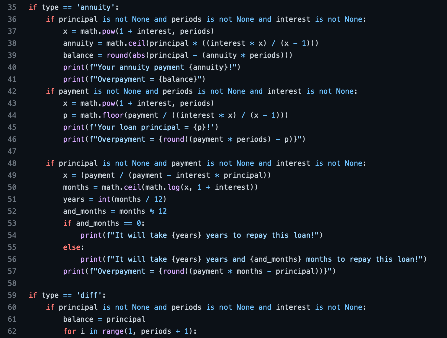

Projects


Placenta Image Analysis
One challenge in image analysis for digital pathology is variation in staining intensity caused by batch variation. A data acquisition pipeline that utilises a simple machine learning approach was developed using Groovy scripting. This approach dynamically adjusts the image analysis parameters resulting in compensation for batch variation in staining intensity.

